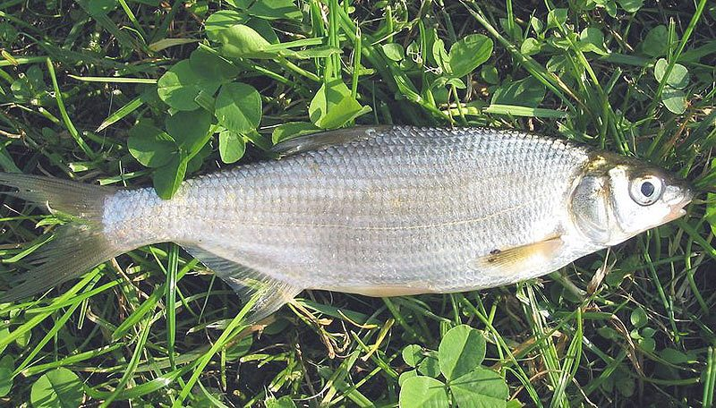

Biologia i rozpoznawanie
Wygląd i rozpoznawanie
Certa (Vimba vimba) to smukła, bocznie spłaszczona ryba karpiowatych o charakterystycznej, wysuniętej ku dołowi, ryjkowatej wardze górnej, która natychmiast zdradza jej dolny, dostosowany do zbierania pokarmu z dna pysk. Grzbiet ma ciemny, stalowoszary lub oliwkowozielony, boki srebrzyste, a brzuch jasny; w okresie tarła u samców pojawia się ciemniejsze, niemal czarne ubarwienie grzbietu, żółtawopomarańczowe płetwy parzyste oraz wyraźna wysypka tarłowa na głowie i pokrywach skrzelowych. Cechą rozpoznawczą jest długa, bezłuska bruzda na brzuchu, ciągnąca się od płetw brzusznych do odbytu — pomaga odróżnić certę od podobnej płoci czy leszcza. Przeciętnie mierzy 25–35 cm i waży 0,3–0,8 kg, choć okazy dochodzą do około 50 cm i przekraczają kilogram. Sylwetka jest wyraźnie wrzecionowata, torpedowata, przystosowana do życia w prądzie rzecznym.
Środowisko i występowanie w Polsce
Certa jest gatunkiem reofilnym, czyli lubiącym płynącą, dobrze natlenioną wodę o żwirowo-piaszczystym dnie — typowe środowisko dolnych i środkowych odcinków dużych rzek nizinnych. W Polsce spotyka się ją przede wszystkim w dorzeczu Wisły i Odry oraz w rzekach przymorskich, a jej klasyczna forma to ryba dwuśrodowiskowa (anadromiczna): dorasta w wodach przyujściowych i słonawych zatokach Bałtyku, po czym wędruje na tarło w górę rzek. Obok formy wędrownej występuje forma osiadła, spędzająca całe życie w rzece. Certa preferuje głębsze rynny nurtu, przejścia za progami, ujścia dopływów i miejsca z równym, wyraźnym prądem. Po latach regresu spowodowanego zabudową hydrotechniczną i zanieczyszczeniami populacje w wielu odcinkach się odbudowały, co czyni certę ponownie realnym celem wędkarza rzecznego, zwłaszcza na dolnej i środkowej Wiśle oraz jej większych dopływach.
Biologia i tarło
Życie certy podporządkowane jest tarłowej wędrówce. Wiosną, zwykle od kwietnia do czerwca, gdy woda ogrzeje się do około 12–18°C, dojrzałe ryby zbierają się w ławice i ciągną w górę rzek na żwirowe tarliska — bystrza z czystym, przepłukiwanym prądem dnem, gdzie ikra przykleja się do kamieni i żwiru. To właśnie ta wiosenna migracja przyciąga wędkarzy, bo przesuwające się stada dają krótkie, ale intensywne okno brań. Samce docierają na tarliska wcześniej i przybierają godową szatę z wysypką tarłową. Po odbyciu tarła osłabione ryby spływają z powrotem w dół, w kierunku żerowisk. Certa dojrzewa płciowo w wieku około 3–5 lat, a jej płodność liczona jest w dziesiątkach tysięcy ziaren ikry. Rozwój larw i młodzieży zachodzi w spokojniejszych strefach przybrzeżnych, skąd stopniowo przemieszczają się ku głównemu nurtowi.
Żerowanie w sezonach
Certa żeruje przydennie, zbierając bezkręgowce — larwy owadów, ochotki, kiełże, drobne skorupiaki, ślimaki i mięczaki — a także cząstki roślinne, wygarniając je swoim dolnym, ryjkowatym pyskiem z przestrzeni między żwirem i kamieniami. Wiosna to szczyt aktywności związany z wędrówką tarłową: ryby, zanim i po odbyciu tarła, chętnie pobierają pokarm w nurcie, co przekłada się na najlepsze wędkarskie okno. Latem stada rozpraszają się po głębszych rynnach i przejściach, żerując najintensywniej o świcie i o zmierzchu, gdy woda nie jest przegrzana. Jesienią, wraz z ochłodzeniem, certa ponownie koncentruje się w większych stadach i intensywnie żeruje, budując rezerwy przed zimą — to druga dobra pora połowu. Zimą aktywność wyraźnie spada; ryby stają w najgłębszych, spokojniejszych partiach koryta i pobierają pokarm oszczędnie, głównie w cieplejszych, słonecznych momentach dnia.
Przepisy, metody i taktyka
Przepisy krajowe i zasady lokalne
Przepisy krajowe: Wymiar 30 cm; okres 1 września–30 listopada w Wiśle od zapory we Włocławku do ujścia, a 1 stycznia–30 czerwca w pozostałych wodach. Źródło: Dz.U. 2023 poz. 1373, § 6–7
Granica okresu ochronnego: jeżeli pierwszy lub ostatni dzień okresu przypada w dzień ustawowo wolny od pracy, okres skraca się o ten dzień (§ 7 ust. 2); wyjątkiem jest całoroczna ochrona jesiotra.
Przed połowem: sprawdź aktualny regulamin i zezwolenie dla konkretnej wody. Wymiar, okres, limit lub zakaz lokalny może być ostrzejszy; brak wartości krajowej nie oznacza zgody na zabranie ryby.
Metody i przynęty
Certę łowi się w nurcie, dlatego dominują dwie metody: feeder i spławik prowadzony z prądem. Feeder sprawdza się przy dalszych, głębszych rynnach — koszyczek z zanętą kładziemy na krawędzi nurtu, a delikatny szczytówka sygnalizuje ostrożne, szarpiące brania. Metoda spławikowa, zwłaszcza w wariancie na przewłokę i na wolno spływającą kropelkę, pozwala precyzyjnie prowadzić przynętę tuż przy dnie wzdłuż toru wędrówki ławicy. Najskuteczniejsze przynęty to białe robaki (pęczek lub pojedyncza sztuka), a także rogal (larwa nasionnicy) — mały, wytrzymały i wyjątkowo lubiany przez certę. Sprawdzają się również ochotki, drobne czerwone robaki oraz kęsy dendrobeny. Zanęta powinna być klejąca, ciemna, z dodatkiem drobnego robaka i ziemi rzecznej, tak by trzymała się dna w prądzie i budowała ślad zapachowy spływający ku stanowiskom ryb.
Taktyka łowienia
Klucz do certy to rozpoznanie toru wędrówki i trzymanie przynęty przy dnie w nurcie. Szukaj przejść za progami, ujść dopływów, krawędzi rynien i miejsc, gdzie szybszy prąd styka się ze spokojniejszą wodą — tam stada przystają i żerują. Wiosną, w czasie migracji, obserwuj, jak ławica przesuwa się w górę: brania przychodzą seriami, więc gdy trafisz na przechodzące stado, tempo łowienia potrafi gwałtownie wzrosnąć, a potem ucichnąć na kilkanaście minut. Zanęcaj oszczędnie, ale regularnie, kładąc kule punktowo na krawędzi nurtu, by utrzymać ryby w torze. Prowadź przynętę z prądem, dając jej naturalnie spływać, i reaguj na najdelikatniejsze zatrzymania i szarpnięcia — certa bierze subtelnie, a po zacięciu broni się żywo, wykorzystując siłę wody. Cienkie, dobrze wyważone zestawy i drobne, ostre haczyki znacząco poprawiają skuteczność.
Wartość kulinarna
Certa uchodzi za smaczną rybę o białym, dość tłustym i aromatycznym mięsie, cenionym zwłaszcza w formie wędzonej — po uwędzeniu nabiera złocistej skórki i wyrazistego smaku, który wielu wędkarzy uznaje za jej największy kulinarny atut. Podobnie jak inne karpiowate, certa ma sporo drobnych, międzymięśniowych ości, dlatego przed smażeniem warto naciąć mięso gęsto w tak zwaną drabinkę, co po obróbce w gorącym tłuszczu sprawia, że ości stają się niemal niewyczuwalne. Nadaje się też do marynat i do zupy. Ze względu na tłuste mięso najlepiej smakuje świeża, tuż po połowie. Jeśli jednak łowisz na odcinku objętym ochroną certy lub regulacjami no-kill, potraktuj ją jako rybę sportową i wypuść ostrożnie — odbudowa populacji w wielu rzekach wciąż wymaga rozsądku i umiaru ze strony wędkarzy.
Ciekawostki
Nazwa certy w wielu regionach funkcjonuje w gwarowych odmianach, a sama ryba przez pokolenia była symbolem wiosennego otwarcia sezonu na dużych rzekach — jej pojawienie się w nurcie zwiastowało nadejście „certowego czasu", gdy nad Wisłą ustawiały się rzędy wędkarzy. Certa to jeden z lepszych przykładów ryby dwuśrodowiskowej wśród naszych karpiowatych: klasyczna forma spędza życie w słonawych wodach przyujściowych, a jedynie na tarło wraca w głąb lądu, pokonując dziesiątki kilometrów pod prąd. Zabudowa rzek — jazy, stopnie i zapory — mocno ograniczyła te wędrówki, dlatego przepławki i programy zarybieniowe odgrywają dużą rolę w utrzymaniu gatunku. Ciekawostką jest też jej dolny, ryjkowaty pysk, który działa niemal jak miniaturowy pług, przeczesujący żwir w poszukiwaniu larw i mięczaków.
FAQ — najczęstsze pytania
Kiedy bierze certa?
Najlepsze okno na certę przypada wiosną, w okresie jej tarłowej wędrówki w górę rzek — orientacyjnie od kwietnia do czerwca, gdy stada przesuwają się przez nurt i intensywnie żerują. Drugą dobrą porą jest jesień, kiedy ryby koncentrują się w większych ławicach i budują rezerwy przed zimą. W ciągu doby brania są najlepsze o świcie i o zmierzchu, choć w chłodniejszej, dobrze natlenionej wodzie certa żeruje także w dzień. Pamiętaj jednak, że wiosenna wędrówka pokrywa się z okresem ochronnym — zanim zaczniesz łowić, sprawdź aktualne regulacje okręgu.
Na co najlepiej łowić certę?
Najskuteczniejsze przynęty na certę to białe robaki i rogal (larwa nasionnicy) prowadzone tuż przy dnie w nurcie. Rogal jest szczególnie ceniony — mały, twardy i wyjątkowo atrakcyjny dla tej ryby. Dobrze sprawdzają się też ochotki i drobne czerwone robaki. Kluczem jest podanie przynęty na krawędzi rynny lub w torze przesuwającej się ławicy, z klejącą, ciemną zanętą, która trzyma się dna w prądzie. Łowi się głównie feederem oraz spławikiem prowadzonym z prądem, na cienkich, delikatnych zestawach z ostrym, drobnym haczykiem.
Gdzie szukać certy na rzece?
Certa trzyma się nurtu i dobrze natlenionej wody nad żwirowo-piaszczystym dnem. Szukaj jej w głębszych rynnach koryta, w przejściach za progami i stopniami, przy ujściach większych dopływów oraz na krawędziach, gdzie szybszy prąd styka się ze spokojniejszą wodą. W Polsce jej mocnym rejonem jest dorzecze Wisły — dolne i środkowe odcinki oraz większe dopływy — a także rzeki przymorskie. Wiosną obserwuj przemieszczające się w górę rzeki ławice: brania przychodzą seriami, więc gdy trafisz na przechodzące stado, warto trzymać się miejsca i zanęcać punktowo.
Czy certę można zabierać?
To zależy od miejsca i pory — certa jest w Polsce objęta ochroną wędkarską, z wymiarem i okresem ochronnym obejmującym wiosenną wędrówkę tarłową, a wiele okręgów PZW stosuje surowsze, własne regulacje, w tym odcinki no-kill czy całkowite zakazy zabierania. Część tarliskowych fragmentów rzek bywa też okresowo zamykana dla wędkowania. Dlatego traktuj podane tu informacje wyłącznie orientacyjnie i przed połowem zweryfikuj aktualne zezwolenie, regulamin właściwego okręgu oraz komunikaty na pzw.org.pl. Tam, gdzie populacja dopiero się odbudowuje, rozsądnym wyborem bywa potraktowanie certy jako ryby sportowej i ostrożne wypuszczenie.
Źródła i weryfikacja
Prawo: punktem wyjścia dla krajowych wymiarów i okresów ochronnych w powierzchniowych wodach śródlądowych jest § 6–7 rozporządzenia Dz.U. 2023 poz. 1373 (źródło zweryfikowano 2026-07-20). Przed połowem sprawdź zezwolenie, regulamin i komunikaty gospodarza tej wody; mogą wprowadzać dodatkowe, ostrzejsze warunki, lecz nie zastępują aktu. Praktyka redakcyjna: opis metod i taktyki ma charakter edukacyjny.
Tożsamość biologiczna i źródła
Nazwa łacińska: Vimba vimba. Grupa atlasu: spokojny żer. Alias: vimba.
Źródła: FishBase: Vimba vimbaGBIF: Vimba vimbaIUCN Red List: Vimba vimba. Dostęp: 2026-07-17. Zakres: tożsamość taksonomiczna i nazewnictwo oraz, gdy wskazano, ocena ochrony; bez potwierdzenia lokalnego występowania, stanu łowiska ani zasad połowu.
Porównanie taksonomiczne
Porównaj z kartą Świnka pospolita. Obie karty prowadzą do osobnych rekordów źródłowych; porównanie nie jest kluczem oznaczania w terenie ani gwarancją wyniku połowu.